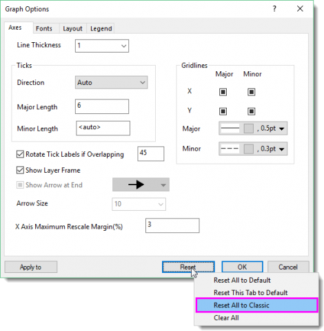
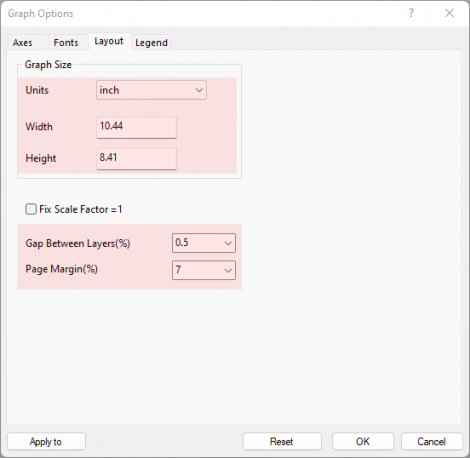

FAQ-1219 Warum sieht meine Grafik in Origin 2025b anders aus als in Vorgängerversionen. Wie stelle ich sie wieder her?
why-graph-looks-different-in-2025b
Letztes Update: 05.08.2025
Wenn Ihre Grafik in Origin 2025b anders als in Vorgängerversionen der Software aussieht, z. B.:
-
- Breitere Diagrammseite (verändertes Seitenverhältnis)
- Kleinere Ränder um das Diagramm
- Unterschiedlich angezeigte Schriftgrößen für Achsentitel, Hilfsstrichsbeschriftungen etc.
- Layerrahmen um die Achsen
- Veränderte Dicke der Achsenlinien
- Automatisches Drehen der Hilfsstrichsbeschriftungen um 45° bei Überschneidung
- ... und mehr
Oder wenn Sie Ihr Diagrammsystemdesign festlegen, aber die neue Grafik sie NICHT anzuwenden scheint, ...
Dann liegt das daran, dass wir mit Origin 2025b den neuen Dialog Grafiktoptionen eingeführt haben, um Ihnen eine bessere Kontrolle über globale Diagrammeinstellungen zu geben. In diesem Kontext haben wir eine neue Reihe von Standardwerten ausgeliefert, die sich von den Vorgängerversionen unterscheidet.
Um das klassische Aussehen der vorherigen Versionen wiederherzustellen:
- Gehen Sie zu Einstellungen: Grafiktioptionen.
- Klicken Sie auf die Schaltfläche Zurücksetzen.
- Wählen Sie im Ausklappmenü Alle auf Klassisch zurücksetzen. Dies wird die meisten Formatierungsoptionen auf die Standardwerte von Origin 2025 zurücksetzen.

Hinweis:
- Einige Standardvorlagen wurde ebenfalls in 2025b aktualisiert. Auch nach der Wiederherstellungen der klassischen Einstellungen kann es vorkommen, dass das Erscheinungsbild nicht genau dem der älteren Versionen entspricht, aber es sollte dem sehr nah kommen.
- Falls Sie es vorziehen, können Sie auch auf die Schaltfläche Zurücksetzen klicken und Alle löschen wählen. Dadurch werden die meisten Einstellungen auf Automatisch gesetzt, das bedeutet, sie werden von dem alten Systemdesign und der alten Diagrammmvorlage bestimmt. Definieren Sie dann Ihre eigenen Einstellungen auf jeder Registerkarte.
- Die Systemvariable '@GGO' steuert, welche Vorlagentypen von diesen Einstellungen beeinflusst werden:
- '0'= Keine
- '1' = Systemvorlagen
- '2' = Anwendervorlagen
- '4' = App-Vorlagen
- '8' = erweiterte Vorlagen
Diese Werte können kombiniert werden (z. B., '3' = System- + Anwendervorlagen).
Um nur das Layout wiederherzustellen (Seitengröße und Ränder):
Wenn Sie die meisten Standardwerte mögen und nur das Grafiklayout anpassen möchten, gehen Sie zur Registerkarte Layout im Dialog Grafikoptionen und wenden Sie folgende Werte an:

Schlüsselwörter:Stil alte Version, Seitenverhältnis der Grafik, Rand, Achsenrahmen, Statistikmodus, Standardmodus, Standarddiagrammseite, Seitenlayout